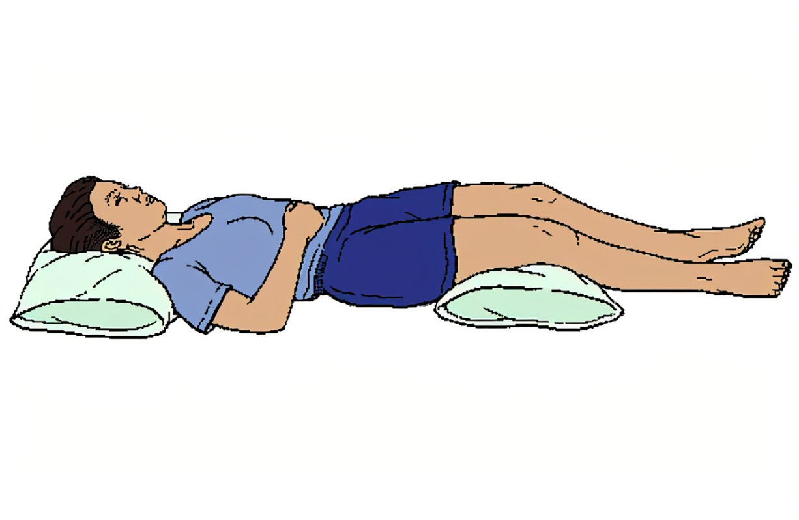
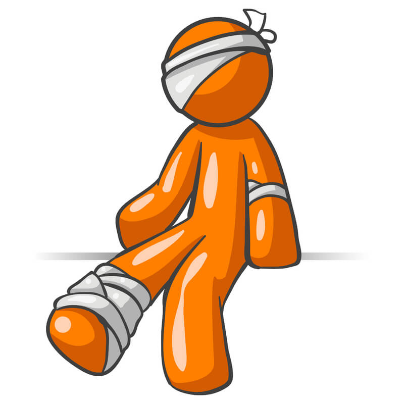

First Aid for Fainting
Fainting, also known as syncope, occurs when there is a sudden decrease in blood flow to the brain, resulting in a temporary loss of consciousness.:
- Causes of fainting
- Dehydration or heat exhaustion.
- Emotional distress or severe pain.
- Low blood sugar.
- Sudden drop in blood pressure.
- First aid steps for fainting.
- Lay the Person Down:
- Check for Breathing:
- Loosen Tight Clothing:
- Fresh Air:
- Stay Calm:
- Check for Injuries:
Help the person lie down on their back. If possible, raise their legs about 12 inches above heart level to improve blood flow to the brain.

Ensure the person is breathing. If they are not, call emergency services and start CPR if you are trained to do so.

Make sure any tight clothing is loosened to improve blood flow and comfort.
Ensure they are in a well-ventilated area or get them some fresh air.
Talk to the person calmly when they regain consciousness. Help them sit up slowly and rest until they feel better.

If the person has fallen, check for any injuries, especially to the head.

- When to call for emergency help!:
- If the person does not regain consciousness quickly (within a minute or so)
- If they were injured during their fall
- If they have a history of fainting or any heart condition
- If they are pregnant or have a medical condition requiring urgent care
- Preventive Measures:
- Stay hydrated: Drink plenty of fluids.
- Eat regular meals: Ensure you have a balanced diet.
- Avoid standing for long periods: Take breaks and move around.
- Get up slowly: Especially from a lying or sitting position.